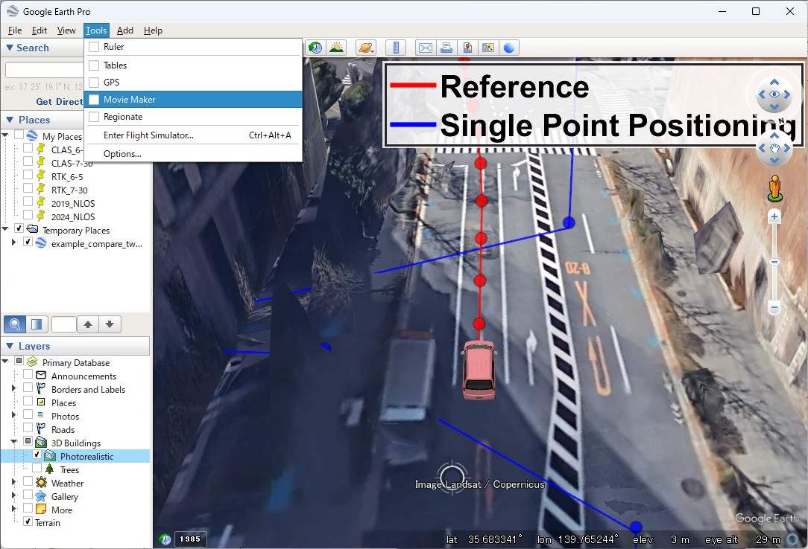
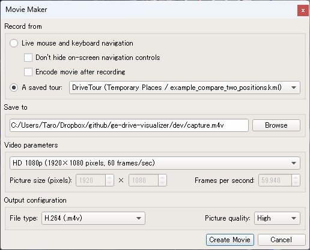
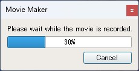

Generate stunning 3D drive visualizations in Google Earth.
Animate vehicles, drones, and LiDAR point clouds with cinematic camera tours.
Animate vehicle and drone models along trajectories with smooth camera tracking and orientation control.
Visualize LiDAR scans as colored 3D cubes with intensity-based coloring, synchronized with vehicle motion.
Auto-generate KML tours with smooth camera fly-throughs. Export movies directly from Google Earth Pro.
Compare multiple positioning methods (RTK, SPP, reference) side-by-side with color-coded trajectories.
Modern C++17 implementation with clean API. Zero dependencies beyond the standard library.
Ships with package.xml and ament_cmake support. Build with colcon out of the box.
Video may not load outside GitHub. View on GitHub
Side-by-side comparison of reference trajectory (red) and Single Point Positioning (blue) with animated vehicle models.
Video may not load outside GitHub. View on GitHub
Vehicle driving animation with real-time LiDAR point cloud visualization. Points colored by intensity.
Video may not load outside GitHub. View on GitHub
Close-up view of LiDAR point cloud visualization with intensity-based coloring around the vehicle.
Video may not load outside GitHub. View on GitHub
Drone flight trajectory with airborne LiDAR data, featuring free camera control for immersive viewing.
All functions live in libgnss::kml namespace. Include <libgnss++/kml/kml.hpp> for everything.
Location | Geographic position (lat, lon, alt) |
Orientation | 3D angles (heading, tilt, roll) |
Color | RGB color (0.0 - 1.0) |
LookAtParams | LookAt camera (heading, tilt, range) |
CameraParams | Free camera (heading, tilt, roll) |
AltitudeMode | ClampToGround / RelativeToGround / Absolute |
createPoints() | Point marker placemarks |
createLine() | LineString trajectory |
createCubes() | 3D polygon cubes (for LiDAR) |
createModel() | 3D DAE model placemark |
createScreenOverlay() | Screen overlay image (legend) |
animatedUpdateModel() | Move/rotate 3D model |
animatedUpdatePoints() | Move points with color change |
animatedUpdateCubes() | Move cubes with visibility toggle |
createLookAt() | Target-relative camera view |
createCamera() | Free-position camera view |
wrapTour() | Create gx:Tour animation |
wrapFlyTo() | Smooth camera transition |
wrapFolder() | Organize elements in folder |
createWait() | Pause in animation |
col2hex() | RGB to KML ABGR hex string |
wrapTo720() | Wrap angle to [-360, 360] |
unwrap360() | Remove heading discontinuities |
enu2llh() | ENU offset to geodetic (WGS84) |
calcCubeVertices() | Cube geometry in geodetic coords |
writeKml() | Write .kml file |
writeKmz() | Write compressed .kmz file |
MATLAB (kml.*) | C++ (libgnss::kml::) |
|---|---|
kml.Point() | createPoints() |
kml.Line() | createLine() |
kml.Cube() | createCubes() |
kml.Model() | createModel() / createModels() |
kml.AnimatedUpdateModel() | animatedUpdateModel() |
kml.AnimatedUpdatePoint() | animatedUpdatePoints() |
kml.AnimatedUpdateCube() | animatedUpdateCubes() |
kml.LookAt() | createLookAt() |
kml.Camera() | createCamera() |
kml.WrapTour() | wrapTour() |
kml.WrapFlyTo() | wrapFlyTo() |
kml.Out() | writeKml() / writeKmz() |
rtklib.enu2llh() | enu2llh() (built-in WGS84) |
git clone https://github.com/rsasaki0109/ge-drive-visualizer.git
cd ge-drive-visualizer
mkdir build && cd build
cmake .. -DBUILD_EXAMPLES=ON -DBUILD_TESTS=ON
make -j$(nproc)
ctest#include <libgnss++/kml/kml.hpp>
using namespace libgnss::kml;
int main() {
// Define trajectory
std::vector<Location> trajectory = {
{35.6877, 140.0194, 0.0},
{35.6879, 140.0195, 0.0},
{35.6881, 140.0196, 0.0},
};
// Create elements
auto look = createLookAt(trajectory[0],
LookAtParams(0, 50, 90),
AltitudeMode::Absolute);
auto model = createModel("Vehicle", "model/vehicle.dae",
trajectory[0], Orientation(0, 0, 0),
1.0, AltitudeMode::Absolute);
auto line = createLine("Path", trajectory,
3.0, Color(1, 0, 0), 0.8);
// Build animation tour
std::string tour;
tour += wrapFlyTo(look);
for (size_t i = 1; i < trajectory.size(); ++i) {
tour += animatedUpdateModel("Vehicle", 0.2,
trajectory[i], Orientation(45, 0, 0));
LookAtParams cam(45, 50, 90);
tour += wrapFlyTo(
createLookAt(trajectory[i], cam,
AltitudeMode::Absolute), 0.2);
}
tour = wrapTour(tour, "DriveTour");
// Write output
writeKml("output.kml", look + model + line + tour);
return 0;
}find_package(gnss_kml_lib REQUIRED)
target_link_libraries(your_target PRIVATE libgnss++::gnss_kml_lib)cd ~/your_ws/src
git clone https://github.com/rsasaki0109/ge-drive-visualizer.git
cd ~/your_ws
colcon build --packages-select ge_drive_visualizer
source install/setup.bashAdd to your package.xml:
<depend>ge_drive_visualizer</depend>Add to your CMakeLists.txt:
find_package(ge_drive_visualizer REQUIRED)
ament_target_dependencies(your_node ge_drive_visualizer)% Add MatRTKLIB to path, then run:
example_vehicle_animation
% Opens generated .kmz in Google Earth Proge-drive-visualizer/ ├── include/libgnss++/kml/ │ ├── kml.hpp # Main header (include this) │ ├── types.hpp # Location, Orientation, Color, enums │ ├── utils.hpp # col2hex, wrapTo720, enu2llh, ... │ ├── elements.hpp # Point, Line, Cube, Model, Overlay │ ├── animation.hpp # AnimatedUpdate for Model/Point/Cube │ ├── camera.hpp # LookAt, Camera views │ ├── tour.hpp # Tour, FlyTo, Folder, Wait wrappers │ └── writer.hpp # KML/KMZ file output ├── src/kml/ # Implementation files ├── examples/ # C++ example programs ├── tests/ # GTest + standalone tests ├── CMakeLists.txt # CMake + ament_cmake auto-detect └── package.xml # ROS 2 package manifest
The library uses the libgnss::kml namespace and mirrors the libgnss++ project structure. To integrate:
# Copy headers and sources into gnssplusplus-library:
cp -r include/libgnss++/kml/ /path/to/gnssplusplus-library/include/libgnss++/kml/
cp -r src/kml/ /path/to/gnssplusplus-library/src/kml/
# Then add sources to gnssplusplus-library's CMakeLists.txt
# (same pattern as gnss_visibility_lib)Enable Photorealistic and Terrain in Layers panel.

Select DriveTour, configure resolution, and save.

Rendering can take a while. Linux is faster than Windows. Use OpenGL mode for best performance.
